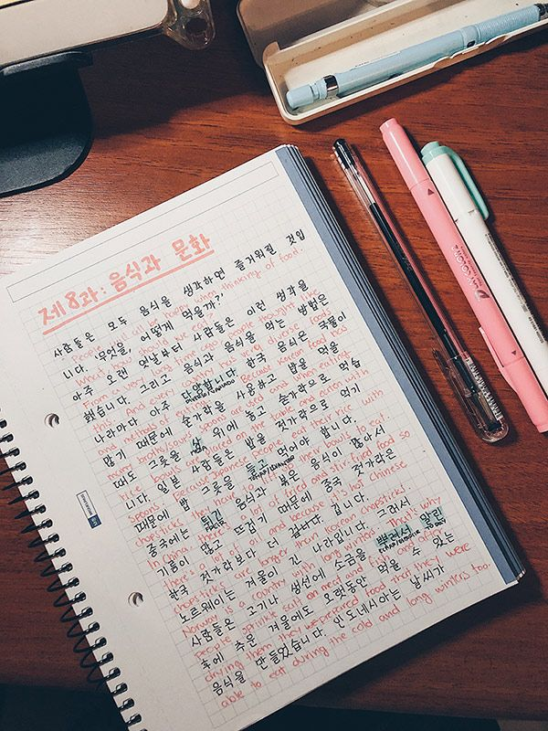

PASSPORT OF PROGRESS
One language at a time, one step closer to fluency
Documenting my personal journey learning English, French, Japanese, and Italian simultaneously.

Documenting my personal journey learning English, French, Japanese, and Italian simultaneously.
